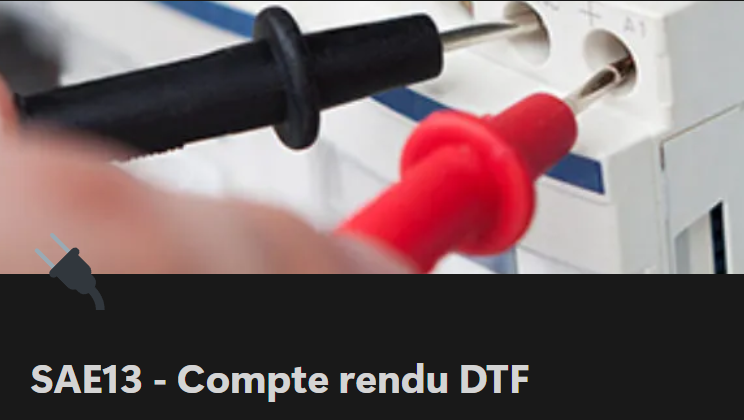

Présentation :
L'objectif de ce projet était de comprendre les conséquences d'un câble de fibre abimé.
Pour ce projet,
nous
avons travaillé par groupe de 5.
Nous avons du analyser précisement où était la perte de signal dans la
liaison d'un câble de fibre optique.
Pour cela, nous avons du faire des mesures de photométrie pour
caractériser l'atténuation sur fibre optique et utiliser la méthode DTF pour mesurer et vérifier la longueur
de câbles coaxiaux et Ethernet.
Avec ce projet, j'ai appris :
RT3 - Créer des outils et des applications informatiques pour les R&T
Niveau 1 : S'intégrer dans un service informatique :
Ma Contribution :
Lors de ce projet, je me tout particulièrement occupée de la partie sur la Photométrie. C'est-à-dire que j'ai
du caractériser la liaison de fibre optique.
Pour cela, j'ai tout d'abord déduis l'atténuation de
référence de la jarretière. Puis en faisant des manipulations j'ai déterminé l'atténuation de la liaison de
la
fibre optique.
De plus, lors de la partie DTF j'ai aidé à faire les mesures et à calculer à partir de quelle distance le
câble subissait des dégats.
Preuves :
Analyse du projet et auto-évaluation :
Ce projet m'a permit de comprendre de façon concrète comment des calculs peuvent nous servir en
télécommunications.
Je suis persuadée que ce projet peut être tout particulièrement utile en entreprise
chez un client.
Cependant, nous avons rencontré des difficultées car le matériel utilisé était nouveau.
Cela nous a alors demandé d'effectuer des recherches supplémentaires pour définir une méthode de mesure
adaptée du câble.